julia WordPress CMS Theme
Please first go through the help file and feel free to contact me if you have any query by login in to themeforest and send an email from my profile page using form at right side http://themeforest.net/user/Kayapati
Theme Installation & Activation
To install this theme you must have a working version of WordPress already installed. For more information regarding installing the WordPress platform, please see the WordPress Codex --
http://codex.wordpress.org/Installing_WordPressAfter downloading theme from Themeforest, unzip the files and find theme folder called "julia" in main-files/ julia folder.
When you are ready to install a theme, you must first upload theme files and then activate theme.
The theme files can be uploaded in two ways.
- 1. WordPress Upload
- 2. FTP Upload
WordPress Upload
1. Navigate to Appearance > Themes > Add New > Upload Theme > Choose Files and select the julia.zip hit "Install Now" and the theme will be uploaded and installed.
2. After Uploading Theme and Activate the theme on Clicking link Activate Text.
Video: Click Here How To Upload Theme And ActivationFTP Upload
1. Using your FTP program, upload julia folder ( unzip julia.zip theme folder ) into /wp-content/ theme folder on your server.
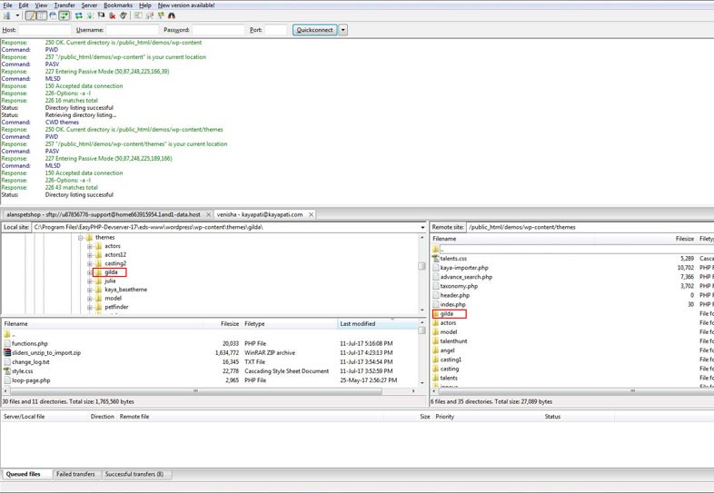Installation and Activating Theme Required Plugins
This Theme Requires Following Plugins.
- Kaya Julia Plugin
- Kaya Roles Manager
- Meta Boxes
- Page Builder by SiteOrigin
- Smart Slider 3
- Talent Agency
- Talent Agency - Frontend Talent Posting Add On
- Talent Agency - Search Form
- Talent Agency - Talents Shortlist Add On
1. Navigate to Appearance > Install Plugins
2. First Install all Plugins by check box and click on Bluck Action Menu and Select install and click on Apply Button to Install Plugins.
3. Next Activate all Plugins by check box and click on Bluck Action Menu and Select Activate and click on Apply Button to Activate Plugins.
Video: Click Here How To Install And Activate PluginsImport One Click Demo Content
Before importing demo content make sure that you have installed and activated julia theme required plugins Kaya Julia Plugin, Kaya Roles Manager, Meta Boxes, Page Builder by SiteOrigin, Smart Slider 3, Talent Agency, Talent Agency - Frontend Talent Posting Add On, Talent Agency - Search Form and Talent Agency - Talents Shortlist Add On
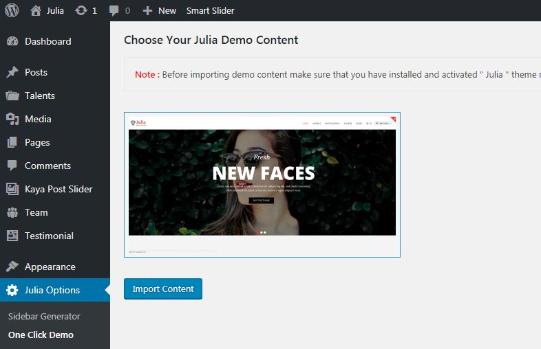1. Navigate to julia Options > Click On One Click Demo
2. Next Click On "Import Demo Content" Button. Then a Alert Box will appear on top of screen and click on Ok Button to Import Content and Wait for few seconds to import.
3. A Success Message will be appear "Data Imported successfully"
4. Click On "Have fun!"
Video: Click Here How To Import One Click Demo ContentHow to Create Custom Meta Fields
Note: If you Imported XML Demo using One Click Demo option you can skip this Creating Custom Meta Fields procedure. Because all the Pages, Kaya Post Slider, Model, Team, Testimonial, Tab Items and Model Options are imported through One Click Demo. So you don't require to create any further pages and Filelds.
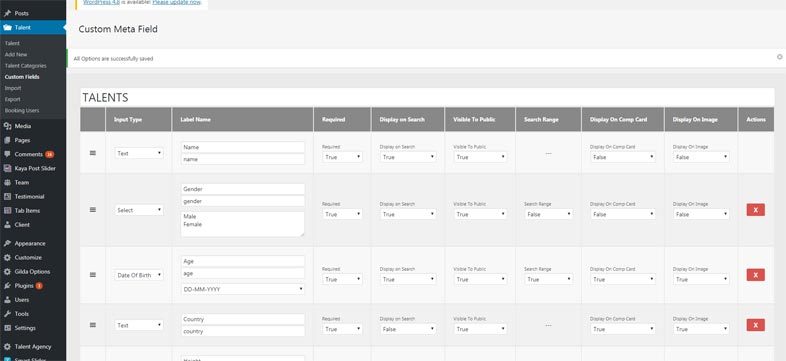1. Navigate to Talent > Click On Custom Fields
2. Next Click On "ADD GROUP" Button to add require fields as per your need.
3. Finally Click On "SAVE CHANGES"
Video: Click Here How To Create Custom Meta FieldsHow to Create New Talent Post
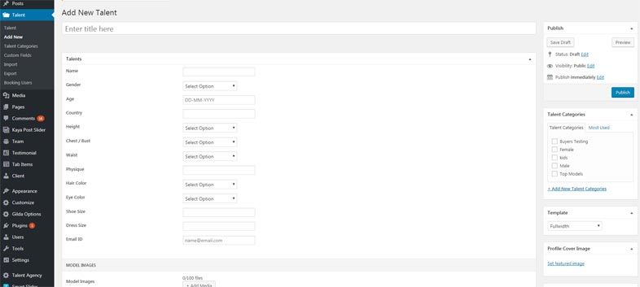1. Navigate to Talent > Click On Add New
2. Add the Fields as per your need.
3. Finally Click On Publish Button.
Video: Click Here How Create New Talent PostHow to Create Become a Model Page
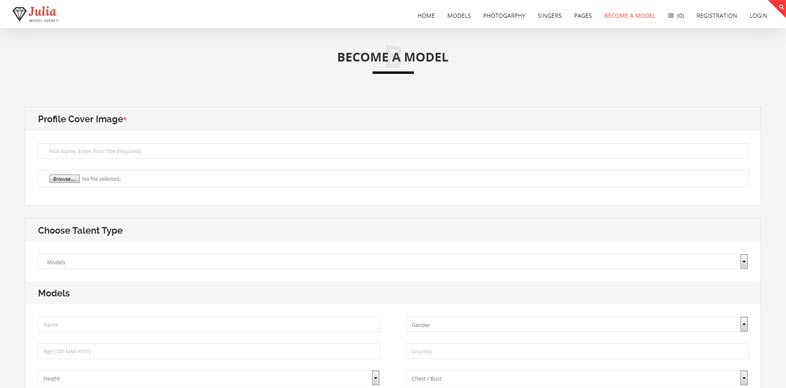1. Navigate to Pages Click on Add New
2. Enter Title as per your need
3. Click on Page Builder Panel
4. Next Click on Add Widget or Widget Button.
5. Select KTA -Talent Submission Form Widget.
6. If you want to edit the text open KTA -Talent Submission Form on clicking edit button. then you can modify text and finally click on Done button.
6. Finally Click On Publish Button.
Video: Click Here How to Create Become a Model PageHow to Add Talent Profile Form
Note: If you Imported XML Demo using One Click Demo option you can skip this Creating Add Talent Profile.
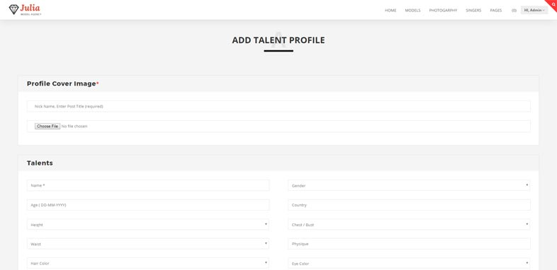1. Navigate to Pages > Click On Add New
2. Enter Title as per your need.
3. Click on Page Builder Panel
4. Next Click on Add Widget or Widget Button.
5. Select Front End - Talent posting Form Widget.
6. Finally Click On Publish Button.
Video: Click Here How Create Add Talent ProfileHow to Create View / Edit Talent Profile
Note: If you Imported XML Demo using One Click Demo option you can skip this Creating View / Edit Talent Profile.
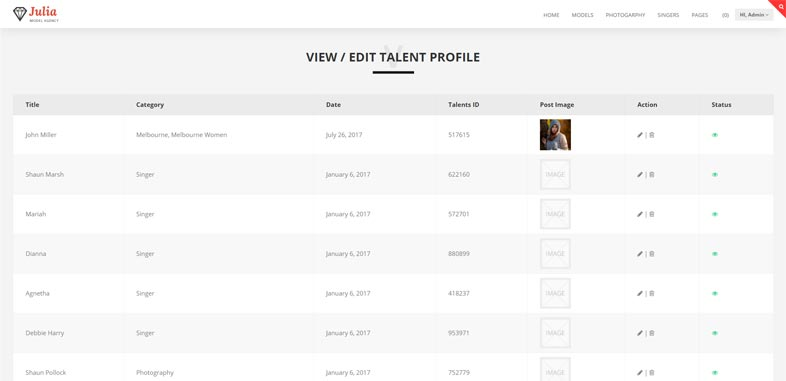1. Navigate to Pages > Click On Add New
2. Enter Title as per your need.
3. Click on Page Builder Panel
4. Next Click on Add Widget or Widget Button.
5. Select Front End - Talent post view Widget.
6. Finally Click On Publish Button.
Video: Click Here How to Create View / Edit Talent ProfileHow to Create User Profile Form
Note: If you Imported XML Demo using One Click Demo option you can skip this Creating User Profile.
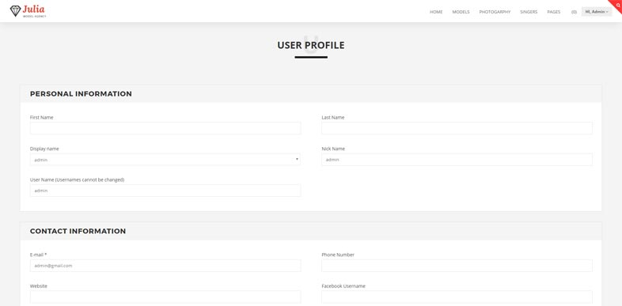1. Navigate to Pages > Click On Add New
2. Enter Title as per your need.
3. Click on Page Builder Panel
4. Next Click on Add Widget or Widget Button.
5. Select KTA - User Profile Widget.
6. Finally Click On Publish Button.
Video: Click Here How to Create User ProfileHow to Create KTA - Registration Form
Note: If you Imported XML Demo using One Click Demo option you can skip this Creating KTA - Registration Form.
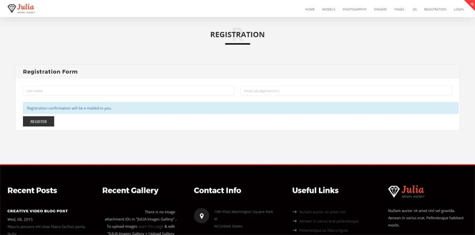1. Navigate to Pages > Click On Add New
2. Enter Title as per your need.
3. Click on Page Builder Panel
4. Next Click on Add Widget or Widget Button.
5. Select KTA - Registration Widget.
6. Next Click on Edit to edit Registration Form Description, Registration Form User Roles and 'Registration as a' Text Change as per your need.
7. Finally Click On Publish Button.
Video: Click Here How to Create KTA - Registration FormHow to Create KTA - Login
Note: If you Imported XML Demo using One Click Demo option you can skip this Creating KTA - Login.
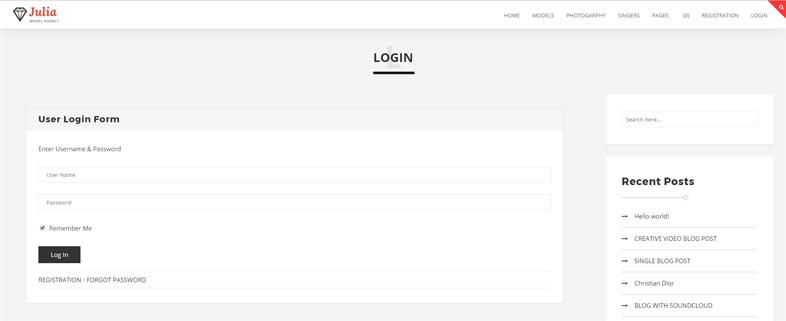1. Navigate to Pages > Click On Add New
2. Enter Title as per your need.
3. Click on Page Builder Panel
4. Next Click on Add Widget or Widget Button.
5. Select KTA - Login Widget.
6. Next Click on Edit to edit Login Description as per your need.
7. Finally Click On Publish Button.
Video: Click Here How to Create KTA - LoginHow to Create Userdashboard Page
Note: If you Imported XML Demo using One Click Demo option you can skip this Creating Userdashboard Page.

1. Navigate to Pages > Click On Add New
2. Enter Title as per your need.
3. Click on Page Builder Panel
4. Click on Row Button
5. Set row layout as 2. make the first row as 25% and the second row as 75%.
6. Click On Insert Button.
7. Add Custom Menu widget in First row and you can edit this row after creating Userboard Menu and in second row add Text widget. Here you can add content as per your need.
8. Finally Click On Publish Button.
Video: Click Here How to Create UserdashboardHow to Create Userdashboard Menu
Note: If you Imported XML Demo using One Click Demo option you can skip this Creating Userdashboard Menu.

1. Navigate to Appearance > Click On Menu
2. Click on create a new menu. Link.
3. Enter the Menu Name as Userdashboard. orelse you can enter your own name.
4. Click On Create Menu Button.
5. Go for Pages Panel and Select Userdashboard, Add Talent Profile, View / Edit Talent Profile and User Profile.
6. After Selection Click On Add to Menu Button and selected pages will add in menu structure
7. Go for Menu Setting Select User Dashboard.
8. Finally Click On Save Menu Button.
Video: Click Here How to Create Userdashboard MenuHow to Add Userdashboard Menu in Custom Menu
Note: If you Imported XML Demo using One Click Demo option you can skip this Adding Userdashboard Menu in Custom Menu
1. Navigate to Pages > Click on All Pages.
2. Select User Dashboard Page and click on Edit.
3. Go for first row Custom Menu click on edit.
4. Here select Select Menu: as Userdashboard.
5. Click On Done button.
6. Finally Click On Update Button.
Video: Click Here How to Add Userdashboard Menu in Custom MenuHow to Create Smart Slider
Note: If you Imported XML Demo using One Click Demo option you can skip this Creating Smart Slider.
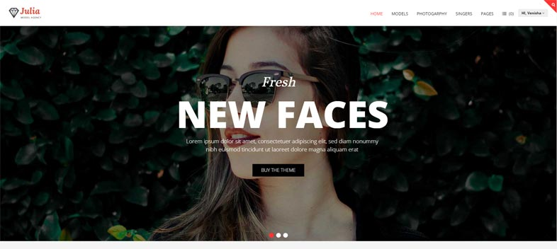1. Navigate to Smart Slider Click On It.
2. Create your Own New Slider orelse Click On Template Library Here you can find Free Sample Slider.
Video: Click Here How to Create Smart SliderHow to Add Smart Slider Shortcode In Page
Note: If you Imported XML Demo using One Click Demo option you can skip this Creating Smart Slider.
1. Navigate to Smart Slider Click On It.
2. After Creating Slider.
3. A Shortcode is Generated.
4. Copy the Generated Shortcode
5. Open the required page where you want to have a slider.
6. Go for Page Background Options panel in page.
7. Choose Choose Subheader Style as Header Slider and Select Select Slider Type as Slider Plugin Shortcode.
8. Paste the copied shortcode in Slider Shortcode input field.
9. Finally Click Publish or Update Button.
Video: Click Here How to Add Smart Slider Shortcode In PageHow to Customize Header Section
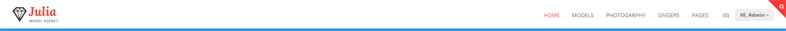Navigate to Appearance and Click on Customize and Click on Header Section
Here You Can Customize the below Following
1. Header Settings
2. Menu Color Settings
3. Logo Settings
4. Advance Search Icon Color Setting
1. Header Settings
a. Here You Can Modify Header Background Color, Header Border Bottom Color, Header Margin Top, Header Margin Bottom and Disable Sticky Header option
b. After Customize Click On Save & Publish Button.
Video: Click Here How to Customize Header Settings2. Menu Color Settings
a. Here You Can Modify Link Color, Link Hover Color, Link Hover BG Color, Active Color and Active Bg Color
b. After Customize Click On Save & Publish Button.
Video: Click Here How to Customize Menu Color Settings3. Logo Settings
a. Here You Can Modify or UploadImage Logo or Text Logo
b. After Customize Click On Save & Publish Button.
Video: Click Here How to Customize Logo Settings4. Advance Search Icon Color Setting
a. Navigate to Talent Agency and Click on Talents Search
b. Search Options Settings Select Colors.
c. Here you can Modify Search Icon background Color, Search Icon Color, Form background Color, Form Input Fields Border Color, Form Input Fields Color, Form Button Background Color, Form Button Text Color, Form Button Hover Background Color and Form Button Hover Background Color
d. Finally Click On Update Settings Button
Video: Click Here How to Customize Advance Search Icon Color SettingHow to Customize Footer Section
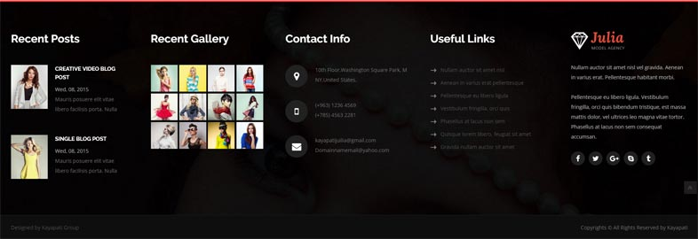Navigate to Appearance and Click on Customize and Click on Footer Section
Here you can Customize the below Following
1. Default Footer
2. Page Type Footer
1. Default Footer
a. Here You can Disable Sticky Footer option and you can Contact Information, Copy Right Information, and adding Social Icons.
d. Finally Click On Save & Publish Button
Video: Click Here How to Customize Default Footer2. Page Based Footer
a. Select Footer Type as Page Type Footer Panel
b. Select Page Footer Which you are Created
How to create page based footer
a. Navigate to Pages and Click on Add New
b. Enter Page Title as per your need.
c. Click on pagebuilder panel
d. Next Click on Row button to add rows as per your need and click on insert button
e. Add Widgets or content in rows as per your need.
f. Finally Click on Publish button
Video: Click Here How to Customize Page Type Footer